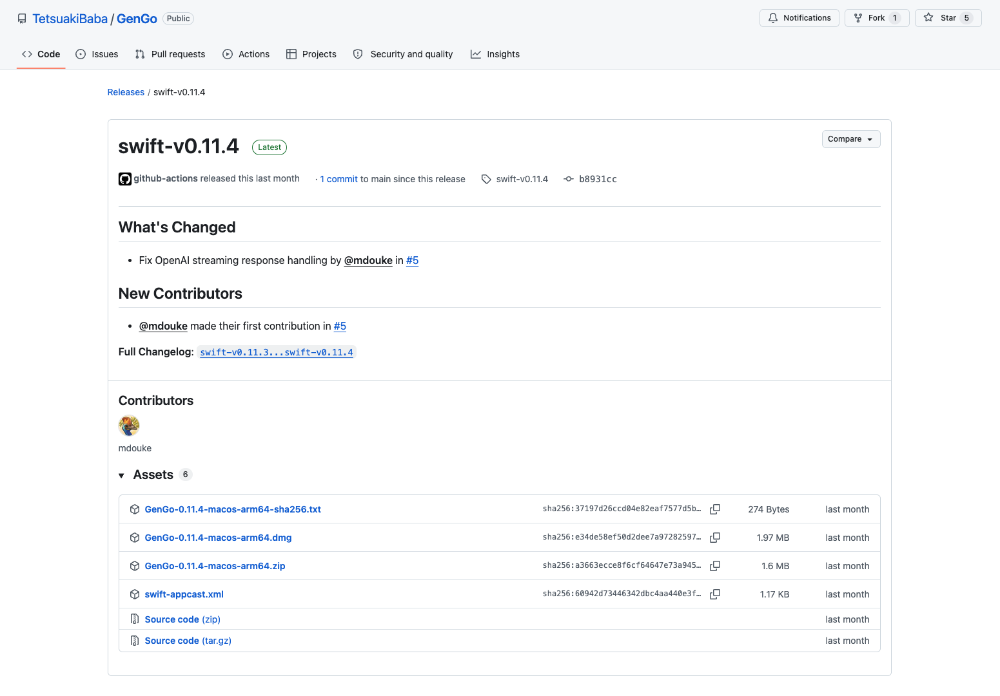
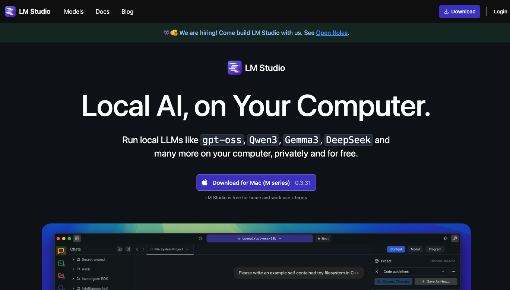
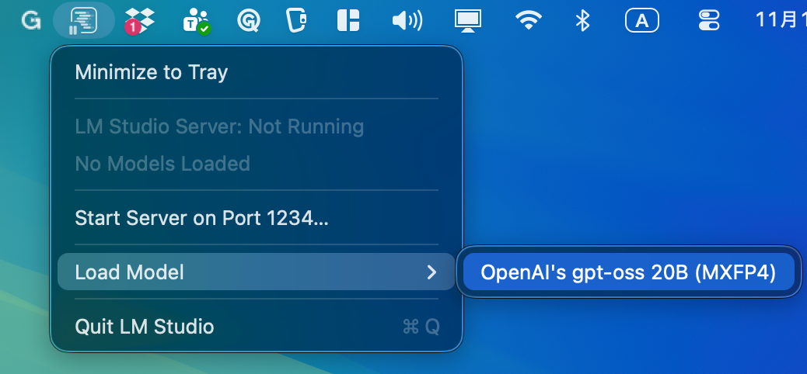
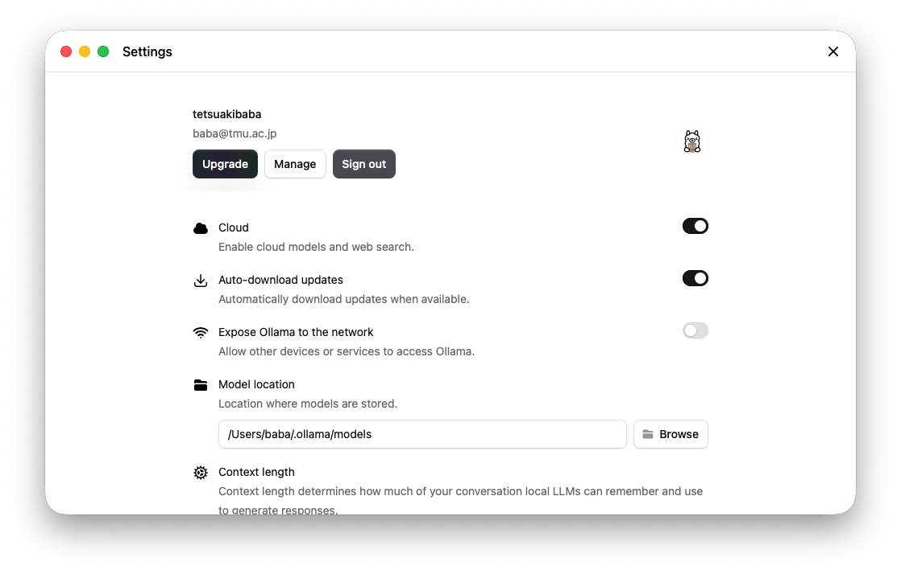
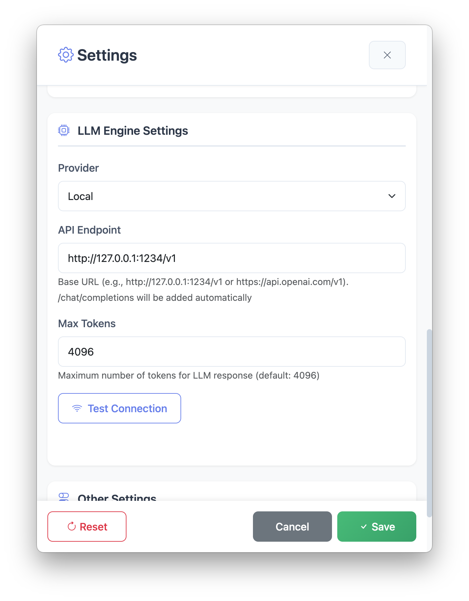
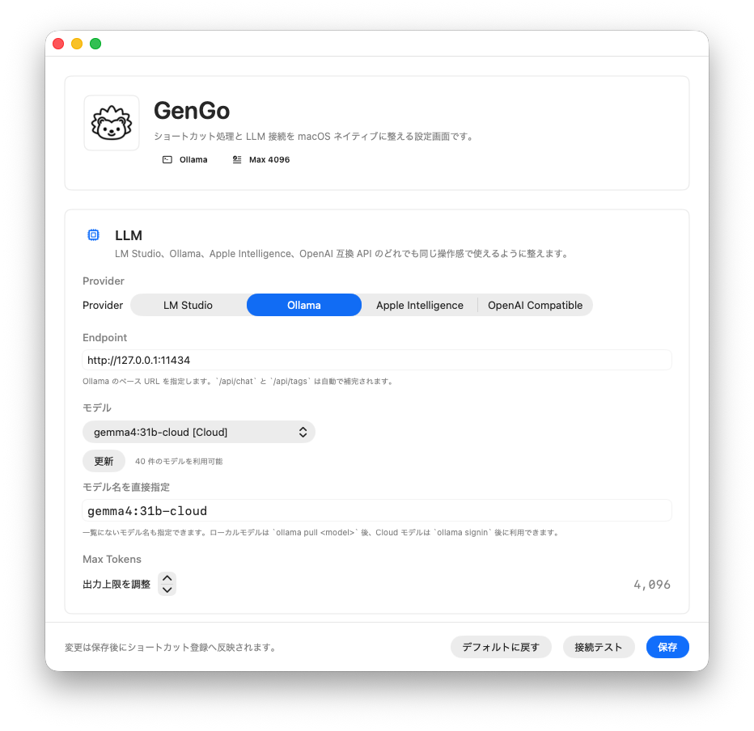
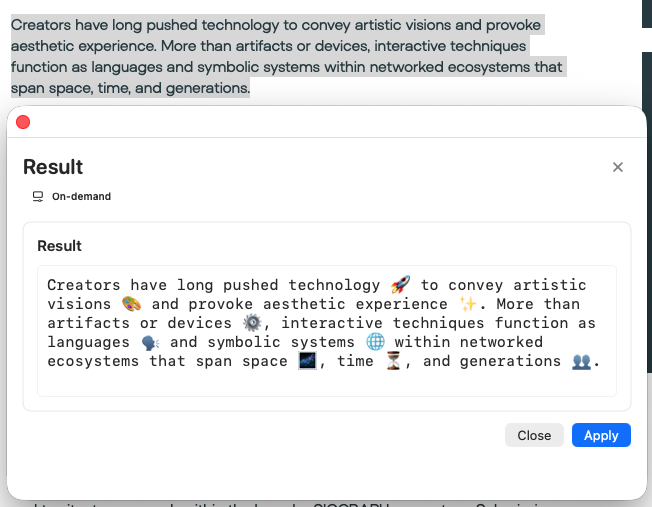

GenGo
AI-Powered Text Processing Tool
LM Studio、Ollama、または OpenAI 互換 API を活用した、macOS ネイティブのテキスト処理アプリケーション。 翻訳、校正、カスタムプロンプト処理を、ショートカットキー一つで実行できます。

AI-Powered Text Processing Tool
LM Studio、Ollama、または OpenAI 互換 API を活用した、macOS ネイティブのテキスト処理アプリケーション。 翻訳、校正、カスタムプロンプト処理を、ショートカットキー一つで実行できます。
共通手順とローカルLLM環境を切り替えて確認できます
Common
GitHubのリリースページから、macOS用のDMGまたはZIPをダウンロードしてインストールします。
ヒント: 初回起動時に確認ダイアログが表示された場合は、macOSの案内に従って開いてください。

Local LLM
GenGo設定: GenGoのSettingsパネルでは、LM Studioをボタンひとつで選択できます。


ヒント: Settings画面ではCloudにチェックが入っているかも確認を忘れずに。

Finish
GenGoを起動し、メニューバーアイコンから「Settings」を開きます。利用するLLMをボタンひとつで選択します。
おすすめ:
GenGoでは
gemma4:31b-cloud
をおすすめします。一部モデルは有料プランが必要な場合がありますが、GenGoのようなTokenを消費しない使い方であればFree Planで十分利用できます。


Finish
任意のアプリケーションでテキストを選択し、Ctrl+1を押してください。日本語の場合は英語に、英語の場合は日本語に変換され、Applyボタンまたは⌘+Enterキーで選択したテキストを入れ替えることができます。
ヒント: テキストを選択せずにショートカットキーを押すと、テキスト生成モードとして使えます。
完了: これでGenGoを使い始める準備が整いました。

GenGoを効果的に使うためのヒントとコツ
実際の使用経験から得られた、便利なプロンプトとショートカットの活用法をご紹介します。各プロンプトは、コピーボタンをクリックすることで、すぐに設定画面にペーストできます。
最新の技術で構築
macOS 13+ ネイティブアプリ
軽量なメニューバーUI
LM Studio / Ollama / OpenAI 互換 API
署名済みアップデート配信
GenGo for macOSをダウンロードして、AI-powered text processingを体験してください。
Version | macOS 13+ | MIT License | オープンソース